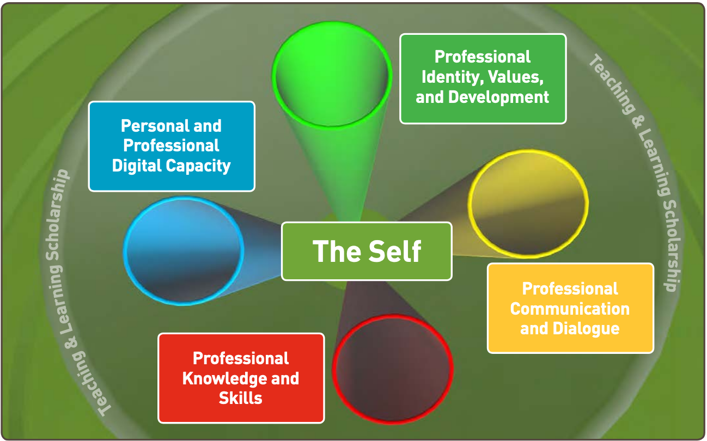

Initial Group Consultation
University of Limerick
Link to slides

Licensed CC-BY under Creative Commons Attribution 4.0
Presented by David Moloney
UL Project Lead for the
IUA Enhancing Digital Teaching & Learning Project

🌐 daveymoloney.com & @daveymoloney on Twitter
Agenda
Introduction to #IUADigEd
This 3 year project, funded through the HEA’s Innovation and Transformation Programme, aims to enhance the digital attributes and educational experiences of Irish university students through enabling the mainstreamed and integrated use of digital technologies across the teaching and learning process. The project aims to mainstream digital in teaching and learning activities in Irish Universities by addressing the professional development of all who teach or support teaching and learning.
Who's Involved?
The #IUADigEd team is made up of the project manager, Dr Sharon Flynn, and student associate intern, based in the IUA, and project team members based locally within each of the 7 participating universities
Project Aims
- Enhance the digital attributes of Irish university students
- Enhance the experiences of Irish university students
- Develop, pilot, review and roll out an ambitious staff development programme to enhance the digital confidence, skills and competences of those who teach in Irish universities
Approach
The project aims to mainstream digital in teaching & learning in Irish universities, by addressing the professional development of all who teach or support teaching & learning.
Each university decides on what shape their staff development will take.
ULs approach aims to meet disciplines/groups directly at their needs.
4 Underpinning Project Principles

What IUADigEd is not intended to be
- Resource development for a group
- All theory, no practical application
- A didactic approach
Keep up to date with the #IUADigEd project
This Professional Development Opportunity
What's in it for you?
- Mentoring & Support 🤝
- Professional Development Workshops 🗺
- Digital CPD 💻
- Support from a Community of Practice 🚀
What's in it for you?
As an individual 🧑🦰
The opportunity to obtain a national microcredential
As a disciplinary group👥👥
Opportunity to apply for a national DELTA award
(Disciplinary Excellence in Learning, Teaching and Assessment)
- There is ~20 hours time committment for participants.
- The National Forum will award a digital badge/microcredential to participants who provide evidence that they have met the relevant criteria at the end of their PD journey.
- The microcredential will be associated with the National Professional Development Framework.
Personal & Professional Digital Capacity
is prioritised as a key area for professional development within the scholarship of teaching & learning
Criteria
- Reflect on your personal strengths and the areas where you can enhance the ways in which you use digital technologies for teaching and learning, using the DigCompEdu framework.
- Explore and demonstrate familiarity with at least one core digital competency area of the DigCompEdu framework.
- Plan the implementation of a technology-based activity for teaching/learning/assessment in your subject area.
- Plan the evaluation of a technology-based activity you are implementing, considering what success would look like and how you would demonstrate this.
Your stated needs
Create an engaging Sulis site!
Purpose: To optimise the individual module sites in Sulis to improve student engagement and facilitate blended learning.
Development: Work as two communities of practice with face to face meetings to train the technical and pedagogical uses of (1) the lessons tool; (2) the chat room; and (3) bigbluebutton.
Do you have the time/support of a Learning Technologist within your faculty/discipline/group for this undertaking?
Suggested Timeline
The goal is that in the Spring semester (19-20) every individual in the group learn about the three Sulis tools and pilot one of them. For example, planning and enacting an online chat with students or use bigbluebutton for an online meeting. Two meetings at Spring semester and another two before July 2020 will be done, to prepare and plan a blended module (using these tools) for the Winter or Spring semester in the academic year 20-21.
Structure of Engagement
Let's try to tie down some CPD topics
| Mode | 1 | 2 | 3 | 4 |
|---|---|---|---|---|
| F2F | DigCompEdu Self-Assessment | Topic? | Topic? | Topic? |
| Online | Topic? | Topic? | Topic? | Topic? |
Research Study
The central focus of my research study at UL is on exploring the impact of the project on the student experience. The project aims to support university academic staff to develop their digital competences and skills so that students’ learning experiences can in turn be enhanced with technology.If you volunteer to participate
You will receive an email from the principal investigator inviting you to write individual reflections on your engagement with- the DigiCompEdu Framework self-assessment tool, both in advance of, and subsequently a second time on completion of, your engagement with the project, and
- the professional development workshops, etc. and subsequent value of this staff development through guided reflections.
Impact on Students
This study will also investigate the student experience of digital teaching and learning at UL and the impact the project has on that experience over the lifetime of the project (2019 - 2022)As a group
Have you thought about how your students' experiences of digital teaching and learning at UL will be impacted by your intended project goals and outputs?
The group should maintain consistent focus on how the changes being implemented will impact upon their students and if changes are catered for appropriately
DigCompEdu
Project activities across all universities will hang from the DigCompEdu framework
Competences
22 distinct competences within the defined areas
3 - Teaching & Learning ,and 5 - Empowering Learners
Within the areas you identified, which particular competences are you going to focus your professional development intentions on?
Proficiency Levels & Indicators
 Newcomer (A1) to Pioneer (C2)
Newcomer (A1) to Pioneer (C2)
'Rules of Engagement'
Establishing a Community of Practice
This CPD opportunity intends to establish a Community of Practice.
It is envisgaed that Microsoft Teams, within ULs Office 365 environment, will be used to accomodate the online CoP